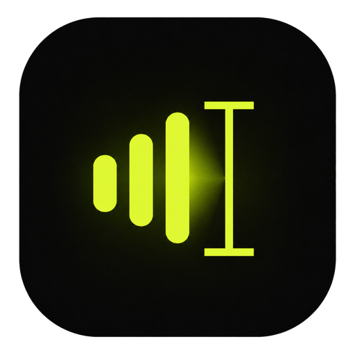

01
Speech recognition runs locally.
A bundled Whisper model transcribes directly on your Mac. Your recordings are not uploaded for processing.
Voice→Your Mac →Text

FnScribe DownloadEarly release · Mac only
Hold fn, speak, and release. FnScribe turns your voice into text locally, then inserts it wherever you are typing.
Apple Silicon · macOS 13 Ventura or newer · English
Release to transcribe and insert
On-device only
Private by architecture
FnScribe is intentionally small, local, and inspectable. The app does not need your identity—or a server—to turn speech into text.
01
A bundled Whisper model transcribes directly on your Mac. Your recordings are not uploaded for processing.
02
There is no notes database or transcript history. Recovery text disappears when FnScribe quits.
03
There is no sign-in, usage tracking, advertising SDK, or cloud transcription service.
04
For broad app compatibility, FnScribe briefly uses a concealed clipboard entry and restores the prior contents when it is safe to do so.
One gesture
Focus the text field where you want your words to appear.
Use push-to-talk, or press fn + Space for hands-free dictation.
FnScribe transcribes locally, cleans up the text, and inserts it at your cursor.
Focused, not bloated
Use the same shortcut in native apps, browsers, terminals, and other text fields.
Spoken punctuation, lists, conservative filler removal, and explicit corrections.
Teach FnScribe names and exact capitalization. Entries stay in local settings.
Copy or retry the last in-memory transcript if automatic insertion misses.
Know before downloading
FnScribe is currently an early English-language release for Apple Silicon Macs. Expect active iteration and the occasional rough edge.